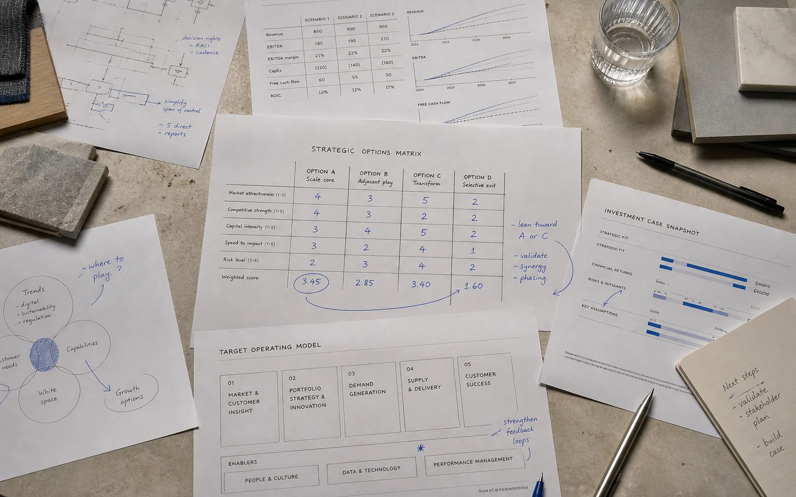
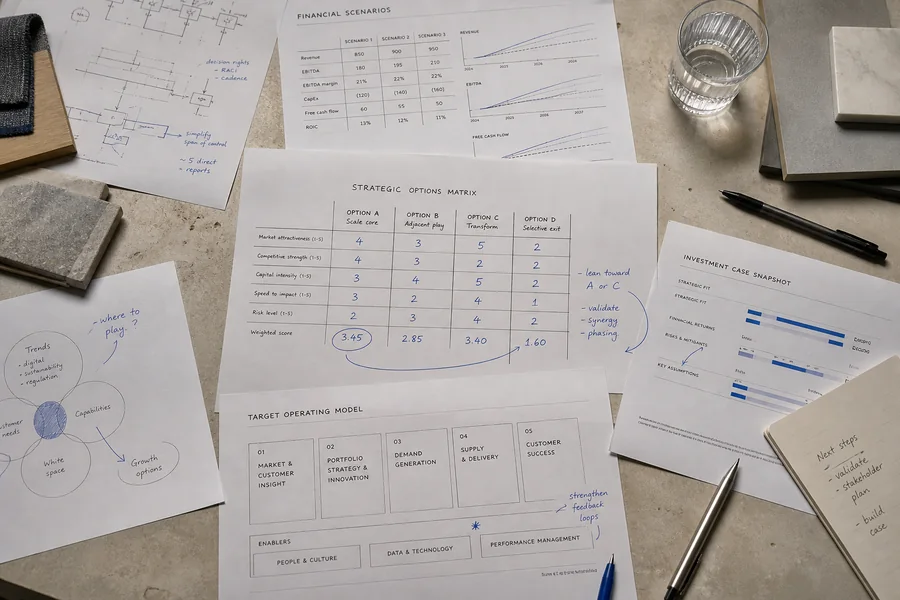

Growth has outrun the operating model.
Demand is visible, but roles, capacity, and investment choices are no longer coherent.
INDEPENDENT STRATEGY + OPERATIONS ADVISORY
Meridian helps owners and leadership teams turn competing facts, priorities, and risks into a decision they can explain—and act on.
Schedule a working session →Current issueWhen a growth plan and operating capacity stop agreeing
WHEN MERIDIAN IS CALLED
Demand is visible, but roles, capacity, and investment choices are no longer coherent.
Priorities multiply while accountability and decision rights remain ambiguous.
Acquisition, market entry, restructuring, or capital allocation needs a rigorous comparison.
The organization needs fewer initiatives, clearer owners, and a usable operating cadence.
ADVISORY AREAS
A DECISION FRAME, NOT A DECK
Select a stage to see what changes in the working session.
Separate the decision from its symptoms, define the time horizon, and name what is genuinely in or out of scope.
REPRESENTATIVE ENGAGEMENTS
Decision: Which work should remain centralized as the company expands into two new markets?
Work: Leadership interviews, economic model, role clarity, scenario comparison, 90-day mobilization.
Decision: Expand geography, add a service line, or deepen the current market?
Work: Market evidence, capacity constraints, investment cases, decision workshop.
Decision: Reset, resize, or stop a multi-year transformation program?
Work: Outcome review, dependency map, governance redesign, executive commitments.

THE WORK ON THE TABLE
Each working session makes the question, evidence, assumptions, options, and tradeoffs visible enough for a leadership team to challenge them together.
SENIOR-LED BY DESIGN
Meridian is intentionally small. Every engagement is shaped and led by a senior advisor, with specialist support added only when it changes the answer.
Advisor names and portraits are fictional demonstration content.Enterprise strategy / operating models
Transformation / critical initiatives
CURRENT THINKING

ESSAY / 7 MINA practical note on moving from agreement in the room to accountability after it.
How resource competition reveals strategy long before the annual planning cycle.
WORKING SESSION
A 45-minute confidential conversation to clarify the question, the stakeholders, the evidence, and a useful next step.